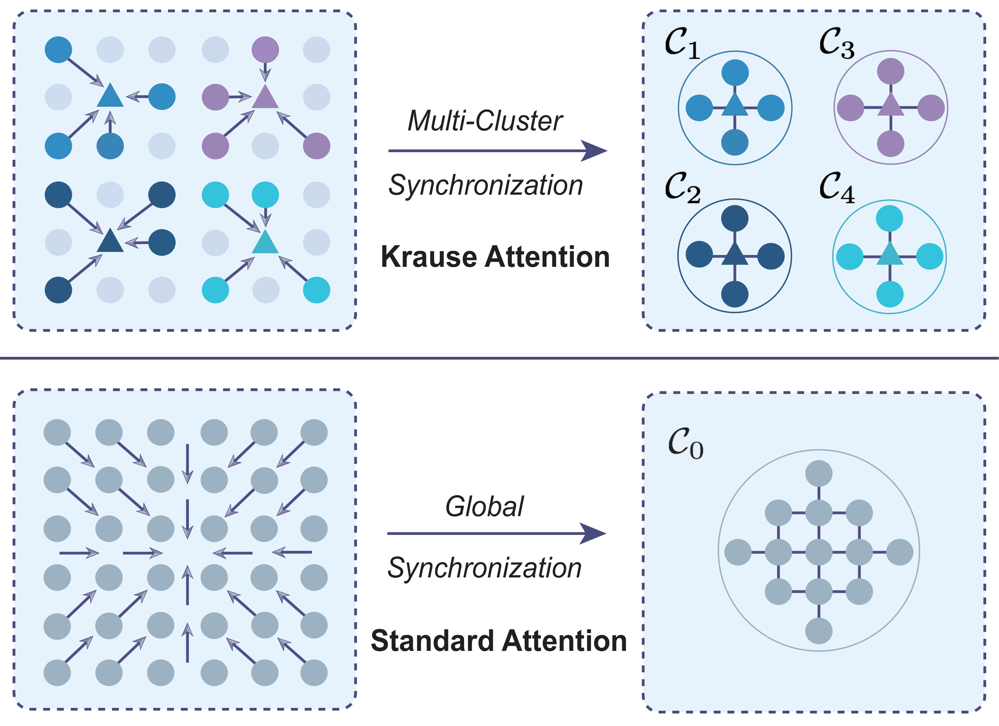
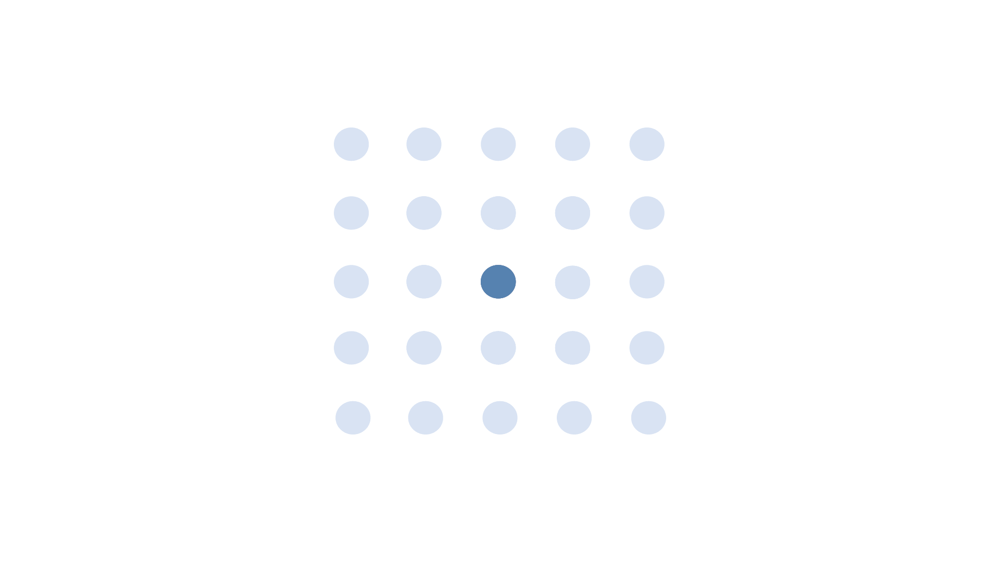
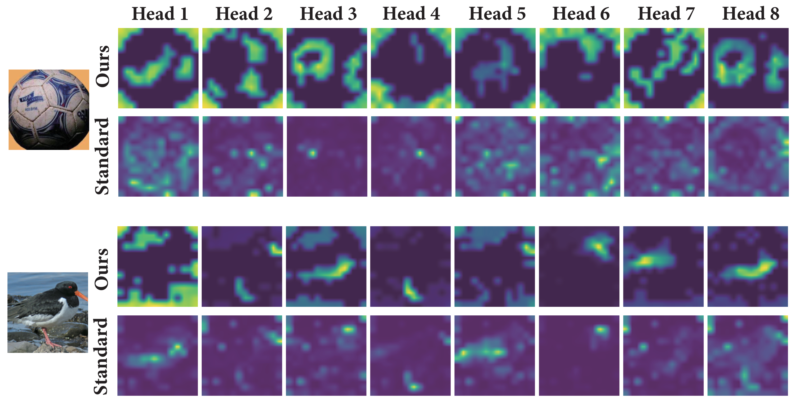
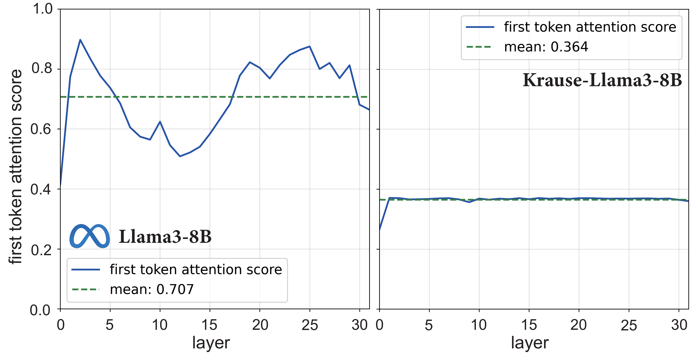

Krause Attention, grounded in bounded-confidence interactions, promotes localized multi-cluster synchronization (top). In contrast, standard self-attention tends to induce globally coupled dynamics that concentrate attention onto a dominant mode, often manifesting as attention sinks (Xiao et al., 2024) (bottom).
Introduction
Self-attention in Transformers relies on globally normalized softmax weights, causing all tokens to compete for influence at every layer. When composed across depth, this interaction pattern induces strong synchronization dynamics that favor convergence toward a dominant mode, a behavior associated with representation collapse and attention sink phenomena. We introduce Krause Attention, a principled attention mechanism inspired by bounded-confidence consensus dynamics. Krause Attention replaces similarity-based global aggregation with distance-based, localized, and selectively sparse interactions, promoting structured local synchronization instead of global mixing. We relate this behavior to recent theory modeling Transformer dynamics as interacting particle systems, and show how bounded-confidence interactions naturally moderate attention concentration and alleviate attention sinks. Restricting interactions to local neighborhoods also reduces runtime complexity from quadratic to linear in sequence length.
Empirically, Krause Attention delivers consistent and substantial gains across vision, generation, and language modeling tasks. For image classification, Krause Vision Transformers (ViTs) consistently outperform standard ViTs (Dosovitskiy et al., 2021) on CIFAR-10/100 and ImageNet-1K, achieving an average accuracy improvement of \( \mathbf{+3.0\%} \) while reducing FLOPs by approximately 30% across model scales. In autoregressive image generation (Parmar et al., 2018), Krause-based models achieve lower negative log-likelihood than standard Transformers while enabling more than 2× faster inference. For large language models (Yang et al., 2024a; Grattafiori et al., 2024) and models trained from scratch, incorporating Krause Attention as an auxiliary pathway consistently improves zero-shot performance over both LoRA-finetuned (Hu et al., 2022) and from-scratch baselines across a broad suite of language understanding benchmarks.
Krause Attention Mechanism

Visual Illustration of our Krause Attention dynamics.
Krause Attention computes RBF affinity scores, restricts updates to spatial local neighborhoods, and applies top-k selective interactions in the representation space.
By encoding locality and selective interactions into the design, Krause Attention turns clustering from a fragile, emergent phenomenon into a more stable architectural inductive bias. This helps preserve token diversity and improve robustness against representation collapse.
Vision Experimental Results
Image classification results on CIFAR-10.
| Models | Acc. | Parameters | FLOPs |
|---|
| KViT-T (Ours) | 93.81 | 5,362,774 | 0.25G |
| ViT-T | 90.75 | 5,362,762 | 0.37G |
| KViT-S (Ours) | 95.20 | 21,342,358 | 0.97G |
| ViT-S | 93.33 | 21,342,346 | 1.43G |
| KViT-B (Ours) | 95.35 | 85,152,022 | 3.77G |
| ViT-B | 92.45 | 85,152,010 | 5.61G |
| KViT-B (RoPE) (Ours) | 95.68 | 85,152,022 | 3.77G |
| ViT-B (RoPE) | 94.10 | 85,152,010 | 5.61G |
Image classification results on CIFAR-100.
| Models | Acc. | Parameters | FLOPs |
|---|
| KViT-T (Ours) | 74.34 | 5,380,144 | 0.25G |
| ViT-T | 66.07 | 5,380,132 | 0.37G |
| KViT-S (Ours) | 71.74 | 21,377,008 | 0.97G |
| ViT-S | 77.05 | 21,376,996 | 1.43G |
| KViT-B (Ours) | 78.03 | 85,221,232 | 3.77G |
| ViT-B | 72.28 | 85,221,220 | 5.61G |
| KViT-B (RoPE) (Ours) | 79.65 | 85,221,232 | 3.77G |
| ViT-B (RoPE) | 74.84 | 85,221,220 | 5.61G |
Image classification results on ImageNet-1K.
| Models | Acc. | Parameters | FLOPs |
|---|
| KViT-S-16 (Ours) | 76.39 | 22,050,676 | 3.22G |
| ViT-S-16 | 75.54 | 22,050,664 | 4.62G |
| KViT-S-32 (Ours) | 72.04 | 22,878,964 | 0.79G |
| ViT-S-32 | 70.66 | 22,878,952 | 1.15G |
| KViT-B-16 (Ours) | 76.75 | 86,567,668 | 12.03G |
| ViT-B-16 | 75.85 | 86,567,656 | 17.61G |
| KViT-B-16 (RoPE) (Ours) | 78.61 | 86,567,668 | 12.03G |
| ViT-B-16 (RoPE) | 78.40 | 86,567,656 | 17.62G |
| KViT-B-32 (Ours) | 71.49 | 88,224,244 | 3.00G |
| ViT-B-32 | 69.90 | 88,224,232 | 4.42G |
Image generation results of KARMs on MNIST.
| Models | BPD | Images/sec | Time Complexity |
|---|
| KARM (Ours) | 0.5652 | 105.6037 | $O(NWd)$ |
| LARM | 0.5855 | 499.3672 | $O(Nd^2)$ |
| ARM | 0.5685 | 83.5772 | $O(N^2d)$ |
Image generation results of KARMs on CIFAR-10.
| Models | BPD | Images/sec | Time Complexity |
|---|
| KARM (Ours) | 3.0032 | 4.5240 | $O(NWd)$ |
| LARM | 3.1836 | 14.4032 | $O(Nd^2)$ |
| ARM | 3.0224 | 1.8933 | $O(N^2d)$ |
Attention Heatmaps in ViTs

Krause Attention yields more diverse attention heads.

Evolution of attention scores across layers in KViTs/ViTs. Krause Attention (left) achieves stable multi-cluster formation, while standard attention (right) progressively converges to a single global consensus.
Autoregressive Image Generation
Samples completed by Krause Autoregressive Models (KARMs) on MNIST (left) and CIFAR-10 (right).
Language Experimental Results
Language understanding and reasoning results of Krause-Llama3-8B. Results are reported in Acc. (%) and Acc. / Macro-F1.
| Models | BoolQ | CB | PIQA | MNLI | ANLI-R1 | ANLI-R2 | ANLI-R3 | MMLU-Pro | IFEval |
|---|
| Krause-Llama3-8B (Ours) | 80.59 | 64.29/48.04 | 77.77 | 63.27/53.72 | 40.30/33.01 | 40.50/34.27 | 45.67/39.84 | 41.67 | 34.01 |
| Llama3-8B (finetuned w/ LoRA) | 80.41 | 60.71/47.81 | 75.16 | 59.53/55.29 | 38.70/30.62 | 39.90/33.37 | 44.92/39.57 | 41.67 | 32.72 |
| Llama3-8B | 76.13 | 41.07/19.41 | 51.52 | 35.45/18.11 | 33.40/16.69 | 33.40/16.69 | 33.50/17.04 | 37.50 | 22.18 |
Zero-shot performance comparison on standard downstream benchmarks at the 100M and 200M parameter scales.
Benchmark results at the 100M parameter scale.
| Models | LAMBADA | CBT | PIQA | Blimp | Hellaswag | ARC-E |
|---|
| Krause (Ours) | 24.51 | 73.42 | 62.68 | 76.76 | 27.78 | 48.04 |
| Window | 24.51 | 72.38 | 61.70 | 77.28 | 27.53 | 46.95 |
| Standard | 23.33 | 72.20 | 62.62 | 77.47 | 27.37 | 47.75 |
| Top-$k$ | 22.80 | 71.24 | 61.81 | 75.66 | 27.95 | 48.04 |
| Longformer | 22.26 | 68.18 | 61.48 | 75.22 | 27.20 | 46.99 |
| Routing | 18.96 | 68.28 | 61.81 | 78.73 | 27.63 | 49.09 |
Benchmark results at the 200M parameter scale.
| Models | LAMBADA | CBT | PIQA | Blimp | Hellaswag | ARC-E |
|---|
| Krause (Ours) | 30.60 | 80.14 | 65.07 | 79.89 | 29.81 | 51.54 |
| Window | 30.45 | 78.19 | 64.25 | 79.95 | 29.81 | 52.38 |
| Standard | 29.67 | 77.91 | 64.80 | 80.22 | 29.71 | 52.13 |
| Top-$k$ | 30.31 | 79.35 | 64.53 | 80.44 | 30.06 | 52.00 |
| Longformer | 28.29 | 76.22 | 63.60 | 79.11 | 29.43 | 52.21 |
| Routing | 18.84 | 70.78 | 63.87 | 80.77 | 29.45 | 52.46 |
Alleviating Attention Sinks

Layer dynamics of first-token attentions on Llama3-8B. Bounded-confidence interactions naturally moderate attention concentration.
LLMs often suffer from the attention sink effect (Xiao et al., 2024), where the softmax normalization allocates disproportionately high attention scores on early tokens, regardless of their semantic relevance. This behavior introduces positional bias, reduces model expressivity, and weakens representation robustness.
Krause Attention provides a complementary, bounded-confidence mechanism for mitigating this issue. By restricting attention to the local neighborhood, distant tokens can no longer allocate weight to the initial positions once they fall outside the receptive field. As shown in above figure, the base Llama model exhibits large oscillations and persistent peaks across layers, whereas Krause-LLMs produce remarkably more stable attention curves. This stabilization indicates that Krause Attention reduces reliance on fixed positional anchors and supports more robust representation learning.
BibTeX
If you find our work useful, please consider citing our paper:
@article{liukrause2026,
title={Krause Synchronization Transformers},
author={Jingkun Liu and Yisong Yue and Max Welling and Yue Song},
journal={ICML},
year={2026},
url={https://arxiv.org/abs/2602.11534}
}